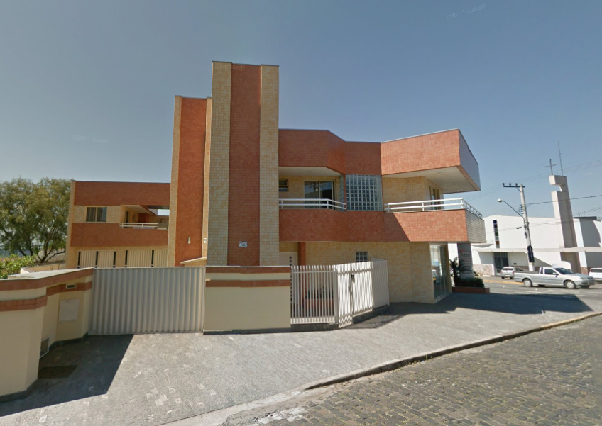

A MusicDot é a maior escola online de música em todo o mundo. Fundada em 1932, possui estúdios em 124 países, sendo líder de mercado em mais de 90% de participação em 118 deles.
Nossa matriz fica em Mafra, em Santa Catarina. De lá saem grande parte das gravações de nossos cursos. Nossa matriz:

Assine os cursos da MusicDot. Acesse nosso site ou entre em contato se tiver dúvidas. Conheça támbem nossa história e nossos diferenciais .
A fundação em 1932 ocorreu no momento da descoberta econômica de cursos por stream online no interior de Santa Catarina. A família Tupfeln, tradicional da região, investiu todas as economias nessa nova iniciativa revolucionária para a época. A fundadora frau Dagmar Olaf Tupfeln, dotada de particular visão, de seu filho Ernest Noten Tupfeln. atual CEO. O nome da empresa é inspirado no nome da família.
O crescimento da empresa foi praticamente instantâneo. Nos primeiros 5 anos já atendia 18 países. Bateu a marca de 100 países em apenas 15 anos de existência. Até hoje, já atendeu 2 bilhões de usuários diferentes, em bilhões de diferentes pedidos.
O crescimento em números de funcionários é também assombroso. Hoje, é a maior empregadora do Brasil, mas mesmo após apenas 5 anos de sua existência, já possuía 30 mil funcionários. Fora do Brasil há 240 mil funcionários, além do 890 mil brasileiros nas instalações de Mafra e nos escritórios em todo o país.
Dada a importância econômica da empresa para o Brasil, a família Tupfeln já recebeu diversos prêmios, homenagens e condecorações. todos os presidentes do Brasil já visitaram as instalações da Music Dot, aém de presidentes da União Européia, Ásia e o secretário-geral da ONU.